Asset Studio는 게임을 혼자 만드는 사람이 쓰는 로컬 도구입니다. 내 PC의 그래픽카드로 이미지를 만들고, 내 그림체를 학습시켜 고정하고, 게임 프로젝트의 AI 도우미가 주문한 에셋을 조립해 보고 확정합니다.
배경 레이어, 캐릭터 파츠, 소품, 3D 메시까지 같은 그림체로 나오고, 확정한 것만 게임 쪽으로 넘어갑니다.
조립 검토 화면. 게임 쪽 Claude가 주문한 레이어와 캐릭터를 겹쳐 놓고 보다가, 어색한 조각만 콕 집어 다시 만들고, 마음에 들면 세트를 한 번에 확정합니다.
이미지 생성 도구는 많습니다. 문제는 한 장이 아니라 수백 장을 같은 그림체로, 게임이 쓰는 형태로 뽑는 일입니다.
같은 설명을 넣어도 열 장이 열 가지 그림체로 나옵니다. 레퍼런스를 매번 붙여도 조금씩 흔들려서, 한 게임의 에셋으로 보이지 않습니다.
배경은 먼 산, 언덕, 숲, 땅 띠로 나뉘어 나오고 캐릭터는 머리·몸통·팔·다리로 나옵니다. 폴더에서 한 장씩 열어 봐서는 겹쳤을 때 어색한지 알 수 없습니다.
게임 쪽 AI 도우미가 에셋을 뽑아 폴더에 넣으면, 내가 검토해 고른 것과 게임에 들어간 것이 같은 파일인지 아무도 보장하지 않습니다.
이미지 생성 모델을 화가라고 하면, LoRA는 그 화가를 내 그림체로 훈련시킨 결과를 담은 작은 파일입니다. 내 그림 20~30장을 주고 몇 시간 훈련시키면, 그 뒤로는 그림을 매번 보여 주지 않아도 이 파일만 끼우면 화가가 내 그림체로 그립니다. 훈련은 화가 한 명에게만 먹히므로, 주력 화가를 한 명 정해서 훈련시킵니다. Asset Studio는 이 훈련과 재훈련을 화면 안에서 처리합니다.
ComfyUI, 학습 도구, 폴더, 뷰어를 따로 오가며 할 수도 있습니다. Asset Studio는 그 순서와 규칙을 한 창에 넣고, 사람은 고르고 확정하는 일만 합니다.
| 이럴 때 | 따로 쓰는 도구 | Asset Studio |
|---|---|---|
| 그림체를 잡을 때 | 레퍼런스를 매번 붙이거나, 학습 도구를 따로 배워 폴더에 이미지를 넣고 설정 파일을 씁니다. | 마음에 드는 그림 1~2장에서 시작합니다. 그걸 레퍼런스로 다양한 대상을 뽑고, 좋은 것에 별점을 매기면 그게 다음 학습의 재료가 됩니다. |
| 다시 학습할 때 | AI가 만든 그림으로 다시 학습하면 AI 특유의 흠이 진해지고 그림체가 서서히 밀립니다. 막을 장치가 없습니다. | 원본은 항상 가장 높은 가중치로 들어갑니다. 새 버전은 원본·이전 버전과 같은 조건으로 나란히 비교한 뒤에만 쓰입니다. 이전 버전은 지우지 않습니다. |
| 검토할 때 | 폴더를 열어 한 장씩 봅니다. 레이어와 파츠는 게임에 넣어 봐야 압니다. | 레이어를 겹쳐 시차를 움직여 보고, 파츠는 뼈대에 조립해 관절을 돌려 봅니다. 어색한 조각을 클릭해 한 줄 적으면 그것만 다시 만듭니다. |
| 게임 쪽 AI가 주문할 때 | AI가 파일 이름을 정해 폴더에 넣습니다. 내가 고른 것과 게임이 읽는 것이 같은지 알 수 없습니다. | AI는 파일 이름이 아니라 village/far_mountain 같은 키로 주문합니다. 내가 확정한 후보만 그 키에 묶이고, 게임 쪽은 매니페스트를 읽어 가져갑니다. |
| 그래픽카드가 한 장일 때 | 학습 중에 생성을 걸면 메모리가 모자라 둘 다 죽습니다. | 생성·학습·3D 변환은 한 줄로 서서 하나씩 돌아갑니다. 학습 중 들어온 요청은 기다렸다가 끝나면 실행됩니다. |
| 비용 | 온라인 학습 서비스는 학습과 생성마다 크레딧이 나갑니다. | 내 GPU로 돌아 생성과 학습이 무료입니다. 3D 외주(Tripo)만 사람이 누를 때 크레딧이 나갑니다. |
ComfyUI와 학습 도구는 그대로 씁니다. Asset Studio가 하는 일은 그 도구들을 대신 켜고 끄고, 결과를 기록하고, 사람이 볼 화면을 만드는 것입니다.
게임 프로젝트의 Claude CLI가 주문을 넣고, Asset Studio가 후보를 만들고, 사람이 확정하고, 게임 쪽이 가져가기까지 다섯 장면입니다.
게임 쪽 Claude는 파일 이름을 정하지 않습니다. 키와 필요한 모양(폭, 반복 여부, 조명 판)만 보냅니다. 그림체는 Asset Studio의 스타일 프리셋이 정합니다.
shared/autumn_bush후보 4 · 노말맵 짝검토 대기village/far_hills후보 2/4 · 낮·노을생성 중shared/ground_strip반복 띠대기모든 요청은 한 줄로 서서 하나씩 돌아갑니다. 학습이 돌고 있었다면 주문은 기다렸다가 학습이 끝난 뒤 실행됩니다. 결과마다 프롬프트, 시드, 모델, LoRA 버전이 함께 저장돼 나중에 똑같이 다시 만들 수 있습니다.
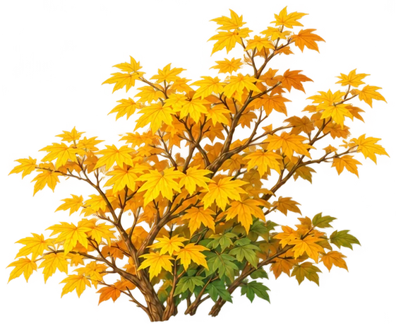
#0611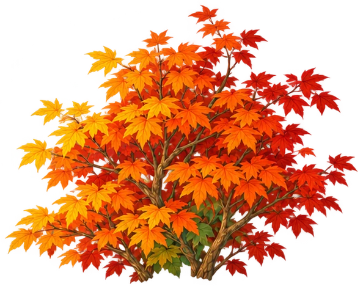
#0612Claude 추천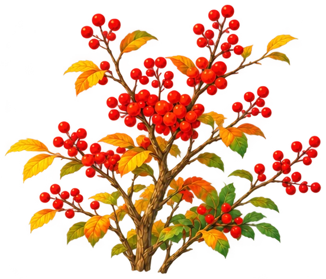
#0613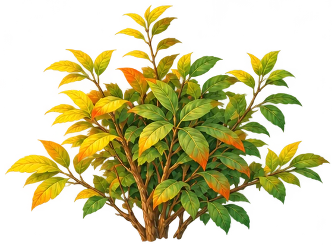
#0614조립 화면에서는 세 키의 후보를 겹쳐 놓고 카메라를 끌어 시차를 봅니다. 땅 띠의 이음매가 어색하면 그 조각을 클릭하고 "이음매가 보인다"라고 적습니다. 그 한 조각만 다시 만들어져 같은 자리에 들어옵니다.
shared/autumn_bush#0612 · v1확정village/far_hills#0620 · v1확정shared/ground_strip#0633 (다시 만든 것) · v1확정확정은 사람만 누릅니다. Claude는 추천까지만 합니다. 확정하면 그 키의 버전이 1이 되고, 나중에 다른 후보로 바꿔 확정하면 버전이 올라갑니다. 확정·승인된 것은 자동으로 지워지지 않습니다.
GET /projects/packoon/manifest
{
"village/far_hills": {
"version": 1, "asset": 620,
"files": {
"day": {"path": "far_hills_day.png", "sha256": "9f3a…"},
"sunset": {"path": "far_hills_sunset.png", "sha256": "c01b…"}
},
"params": {"width": 2688, "height": 1080, "top_transparent": true}
},
"shared/autumn_bush": {
"version": 1, "asset": 612,
"files": {
"diffuse": {"path": "autumn_bush.png", "sha256": "41e7…"},
"normal": {"path": "autumn_bush_n.png", "sha256": "7d2c…"}
},
"params": {"isolated": true, "unlit": true}
}
}
게임 쪽은 매니페스트만 봅니다. 내가 확정한 것과 게임이 쓰는 것이 같은 파일이라는 걸 키·버전·해시가 보장합니다.
키 이름과 숫자는 설명을 위해 줄인 것입니다.
처음부터 레퍼런스 30장을 모을 필요가 없습니다. 적게 시작해서 뽑고 고르는 동안 그림체가 단단해집니다.
직접 고른 그림. 이 그림체로 가겠다는 기준입니다.
원본을 보여 주며 소품·배경·캐릭터를 다양하게 뽑습니다.
★★ · ★ · 제외. Claude가 추천하고 사람이 정합니다.
원본과 고른 그림으로 학습. 250단계마다 샘플이 쌓입니다.
이전 버전·새 버전을 같은 조건으로 나란히. 더 가까운 쪽을 씁니다.
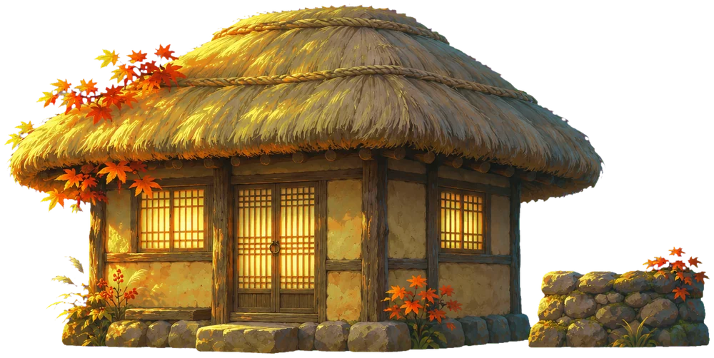
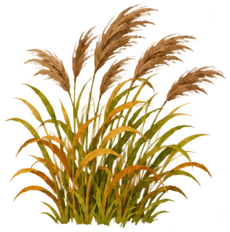
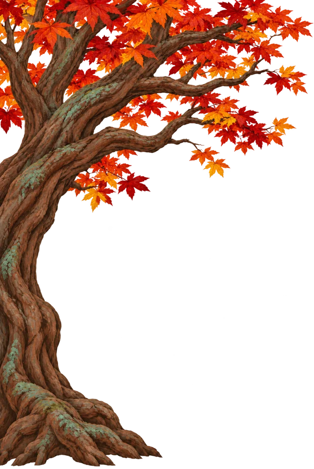
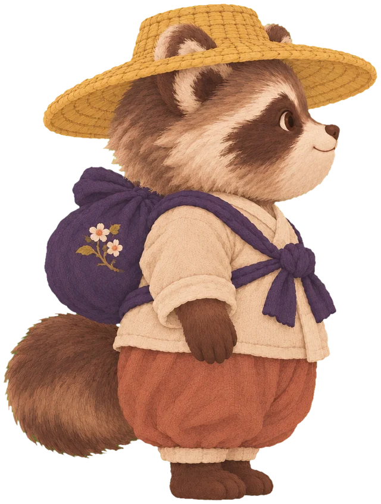
같은 프리셋으로 뽑은 소품·배경·캐릭터. 대상이 달라도 붓 질감과 채도가 같아야 한 게임의 에셋으로 보입니다. 이 그림들이 별점을 받으면 다음 학습의 재료가 됩니다.
AI가 만든 그림으로 다시 학습하면 흠이 진해지고 그림체가 밀립니다. 그래서 원본은 늘 가장 높은 가중치로 들어가고, 원본 비중이 20% 아래로 내려가면 학습 전에 경고합니다.
새 버전이 원본에서 멀어졌으면 이전 버전으로 돌아갑니다. 어떤 버전으로 무엇을 만들었는지 모든 결과물에 기록됩니다.
그림체 훈련은 화가 한 명에게만 먹힙니다. 처음 설치할 때 후보 모델 둘에게 같은 원본으로 그리게 해 더 가까운 쪽을 주력으로 정하고, 프리셋은 그 모델에 묶입니다.
배경은 레이어로, 캐릭터는 파츠로 나옵니다. 낱장이 아니라 조립한 상태로 보고, 클릭 한 번으로 그 조각만 다시 주문합니다.
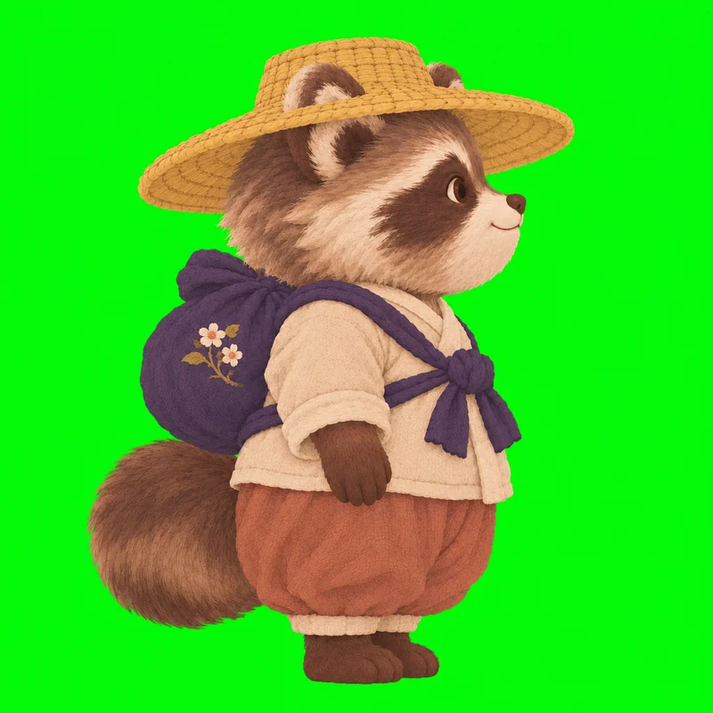
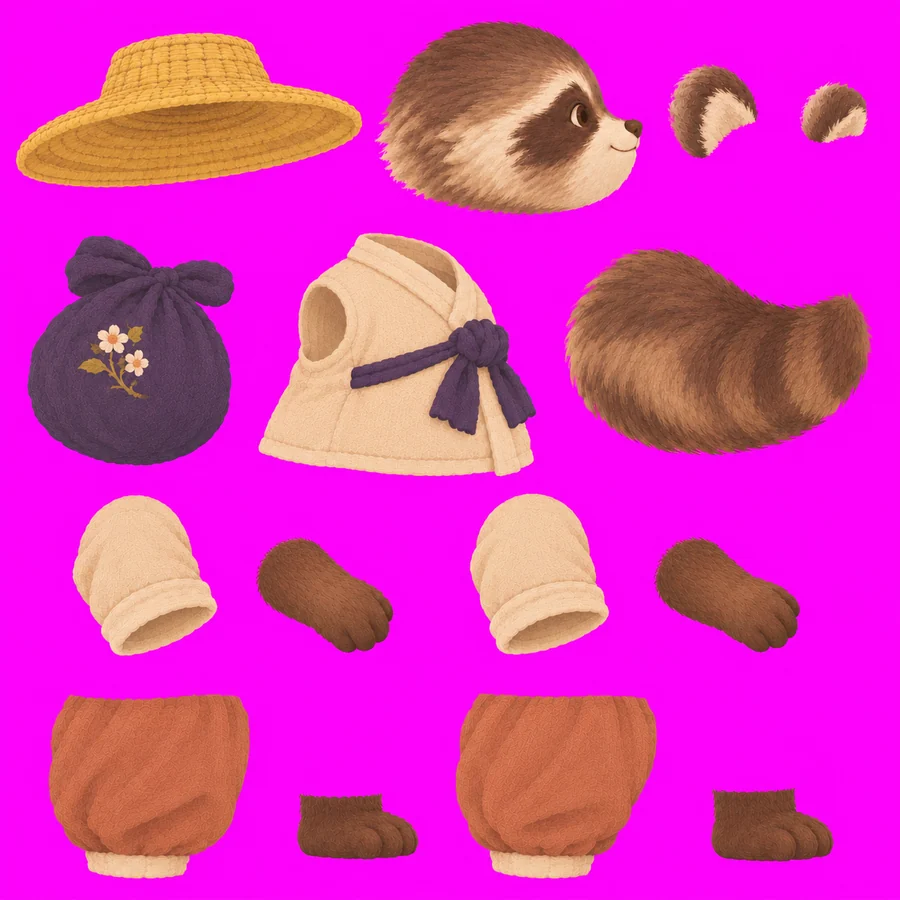
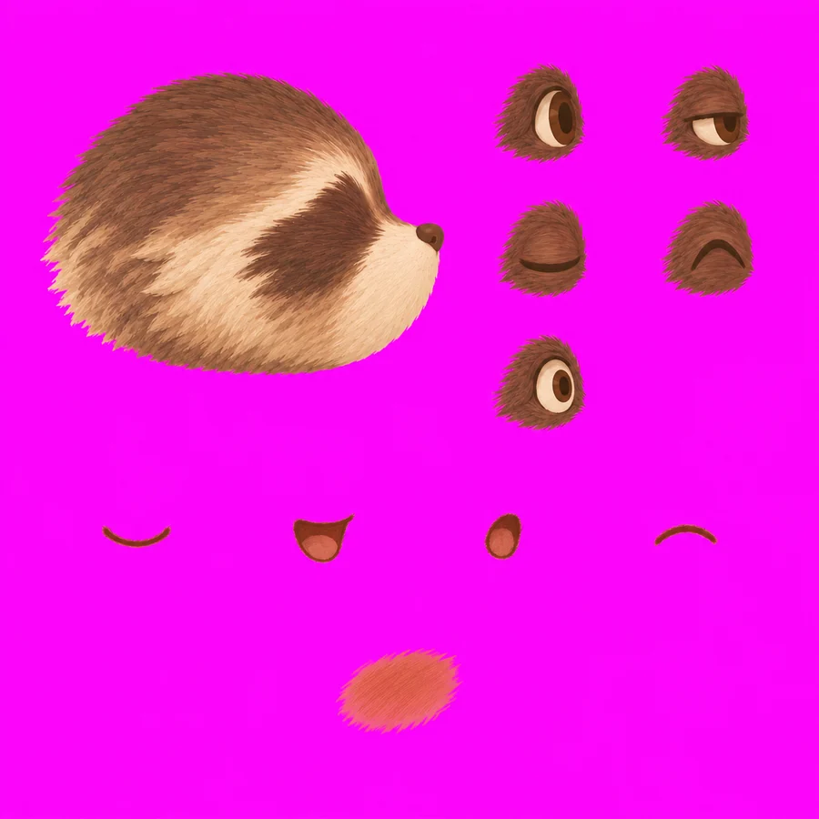
upper_arm_L처럼 프리셋에 정해진 것만 써서 Godot 애니메이션이 캐릭터끼리 호환됩니다. 눈·입은 표정 시트로 따로 뽑아 바꿔 끼웁니다.두 Claude(게임 쪽, Asset Studio 쪽)와 사람이 같은 에셋을 가리키게 하는 규칙입니다.
village/far_mountain처럼 영문 소문자와 밑줄로 된 키입니다. Asset Studio는 키를 새로 짓거나 바꾸지 않습니다. 파일 이름은 키에 딸린 정보일 뿐입니다.
키마다 후보가 여러 장 생기고, 그중 하나에 확정을 누르는 건 사람입니다. Claude는 추천과 이유를 붙일 뿐이고, 승인·거절·삭제는 할 수 없습니다. 권한은 말이 아니라 토큰으로 막혀 있습니다.
확정하면 키 → 에셋, 버전, 파일 해시가 매니페스트에 오릅니다. 게임 쪽은 그것만 읽고 가져가고, 해시로 받은 파일이 맞는지 확인합니다. 다시 확정하면 버전이 올라가 게임 쪽이 새로 받습니다.
구역이 화면 몇 장인지, 레이어가 몇 겹인지는 주문에 담깁니다. Asset Studio는 그 값을 받아 만드는 능력만 갖춥니다.
parts.json).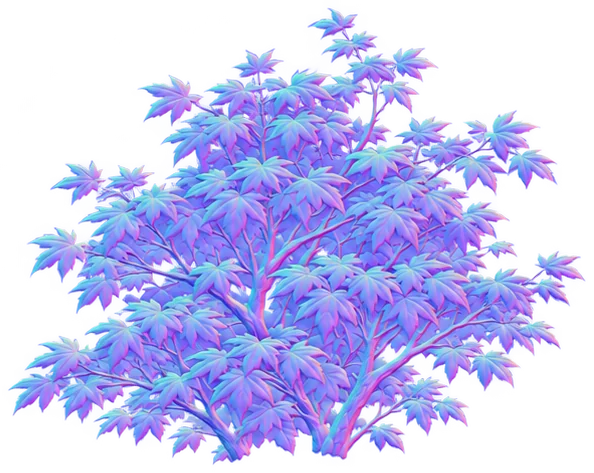
디퓨즈노말맵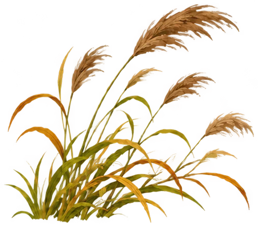
reed_02Claude는 두 군데서 일합니다. 화면 안에서는 프롬프트·캡션·추천을 쓰고, 밖에서는 Claude CLI가 같은 기능을 MCP로 씁니다. 모든 행동은 누가 했는지 기록됩니다.
이 경계는 Claude가 쓰는 토큰의 권한으로 막혀 있습니다. 규칙을 읽고 지키는 게 아니라, 넘으려 해도 서버가 거절합니다.
설치는 Claude Code가 하고, 사람은 그림체의 기준이 될 원본을 고릅니다. 그다음부터는 주문하고 확정하는 일만 남습니다.
경로에 한글과 공백이 없는 폴더에 저장소를 받고 설치 명령 하나를 내립니다. ComfyUI, 학습 도구, 모델, Blender를 받아 첫 실행 검증까지 통과시킵니다. 관리자 권한이 필요하면 멈추고 묻습니다.
후보 모델 둘에게 같은 원본으로 그리게 해 그림체가 더 가까운 쪽을 주력으로 정합니다. 그 원본이 첫 스타일 프리셋의 기준이 됩니다.
게임 저장소의 설정에 Asset Studio MCP 서버와 토큰을 넣으면, 그 Claude는 키로 주문하고 매니페스트를 읽어 갑니다. 확정은 여전히 화면에서 사람이 누릅니다.
검토함주문·확정 대기 목록 · 조립 검토(배경 레이어, 캐릭터 파츠) · 세트 확정생성스타일 프리셋으로 생성 · 레퍼런스 분석 · 조명 변형 · 반복 띠 · 노말맵 짝갤러리별점 · Claude 추천 · 프롬프트·시드·LoRA 버전 기록 · 승인·거절파츠A포즈 한 장 → 파츠 시트 → 뼈대 조립 · parts.json학습데이터셋 가중치 · LoRA 학습 · 원본과 비교 · 버전 연결스케치 · 3D대충 그린 선에서 에셋 · 승인한 소품을 GLB·FBX로 · 폴리곤 수 줄이기만드는 손은 GPU와 Claude가 되고, 사람에게 남는 일은 처음에 원본을 고르는 것과 마지막에 확정을 누르는 것입니다.
첫 프로젝트는 PACKOON입니다. 그림체를 지켜야 하는 어떤 게임에도 프로젝트를 하나 더 만들어 그대로 씁니다.